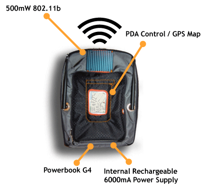

|
The WiFi.Bedouin consists of a small backpack containing an adapted 802.11b access point, RF amplifier, custom power supply and a PowerBook G4 running custom software, MovableType Blog software, a custom chat application, Apache 2.0, the Tomcat Java Servlet Container, and WiJacker - a custom built application that translates arbitrary named URLs to local services. A PocketPC PDA - the iPAQ 2200 - is mounted to the front of the WiFi.Bedouin pack, and is configured with its own 802.11 card. The PDA is used as a visual display for a custom GPS mapping application (mStory), for node WiFi activity, and for simple configuration.
|

|
The physical, wearable design of the project was inspired by the proliferation of functional-fashionables - designed objects that have utility while they are also suitable for wearing about. I also draw inspiration from a play on the expression mobile internet, often used in marketing evangelicals promoting new portable, mobile devices. My twist on this design is to make what appears to be a local, constrained internet (in that it relies upon the conventional means of access to web-based services the web browser) and make that particular internet mobile.
more
Download the complete project documentation.
Find out about the other project in the Proximity series - WiFi.ArtCache
|
|